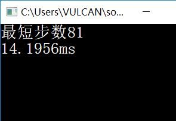
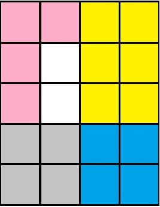

博客博客
博客博客
用户登录与注册 |
猴子也能懂的华容道求解:版权声明：本文为博主原创文章，未经博主允许不得转载。标题是“猴子也能懂的华容道求解“”是有点夸张，华容道我进行了大量的分析，最后选择了最没有技术含量的方法编写代码，在这里详细讲讲我的思路，不过不放出我的源代码。 我的解华容道的代码思路是采用bfs和编码，我认为华容道的空间复杂度取决于你是如何移动棋子的，时间复杂度则取决于你要怎么判断棋盘是否出现过。移动方式对时间复杂度没多大影响，真正影响的只有查重问题。 如果读者真正上手后就会发现移动棋子的代码占用了大部分，查重很简单。 bfs使用队列储存棋盘布局，数组储存已经出现过的棋盘布局。仔细想想，不可能用char数组储存出现过的数组，然后再使用char数组遍历所有情况，那样的时间复杂度实在太大了。所以我使用度娘找到了一些查重方法：编码法，加权法，hash法。本文我采用的是编码+hash法，其中hash的代码部分是通过库函数实现的，具体知识请自行搜索，在下水平有限，对hash的知识了解甚少。其实加权法也是编码法里的一种，但是那块知识我不怎么会，所以我强行把它们区别开，请读者见谅。 在C++下编写，如果只是使用编码法，在我的电脑上，单论横刀立马需要跑至少70ms，使用编码+hash法最快可以跑14ms，以上两种方法的效率不稳定。稳定的是加权法，通过研究其他大佬的加权法代码，使用加权法可以跑到10ms左右，使用加权+hash法可以将时间缩短至4ms以内。加权法太复杂，本文不涉及这部分知识。 关于华容道的编码法有许多种方法，这里只讲我研究中最快的一种。（PS：不同的电脑跑的速度不同）  编码先来介绍一下棋盘的种类。查找规律，可得曹操的位置有12种，则横将的位置最大有11种，竖将的位置最大有12种，小兵的棋子有4个，根据规则棋盘空出6个位置放置2个空格以及4个小兵，所以小兵的位置一定有15种组合（C[4,6]）。 利用排列组合公式C[a,b]计算出最大组合数，这样在编写代码时直接使用该组合数，虽然这样写会使代码可读性下降和内存增大，但是可以避免在细节上出错。 曹操有12种，小兵有C[4,6]=15，横将最大有C[5,11]=462，竖将最大有C[5,12]=792。 12*15*792=142560，故最大有142560种棋面，所以队列大小我取最大开了char Layout[142560][20]。 进入编码问题，一个棋盘大小是20，曹操有12种放法，横将有15种，竖将有16种，小兵有20，故开个20+16+15+12=63的位数组，一个位数组对应着唯一的long long int型整数。所以只要将这个整数加入数组中，查重只需要将棋盘编码并转为整数，查找是否出现过这个整数。为了进一步减少时间复杂度，在保存棋盘编码是，保存它的对称棋盘，效率能够提高几倍。 BFS建立队列，第一个棋盘入队，利用棋盘高度标记当前步数，使用循环实现入队和出队，temp,now,all分别是0到i-1步数层的成员个数，当前在队列中的位置，当前队列总长度。随着层数的增加，队列总长度也会不断增加。移动before[10], after[10], sum,先保存再移动本代码将棋子分为横将、竖将、小兵、曹操，各种棋子都分类成同种元素。空格0,兵1,竖将2,横将3,曹操4。 求解华容道的方法很多，这只是其中一种。开始写代码之前，先搞清楚棋盘的规律，画个图即可，从空格的角度出发，空格最大会有10种移动方式，如图中的情况（蓝色为曹操，黄色为横将，灰色是竖将，粉色为小兵）  根据当前局面，将空格的原位置保存在before数组中，可移动的位置保存在after数组中，sum为可移动的最大数。根据规律，可以使用宏定义来快速实现保存空格，宏定义比调用函数快，也不占用过多空间。 比如移动前是的位置(x,y)是曹操，那么你第一反应会是把空格分为横型还是竖型？完全不用，只需将(x,y),(x+1,y),(x,y+1),(x+1,y+1)的值赋予空格的值0，之后再将移动后的位置(p,q),(p+1,q),(p,q+1),(p+1,q+1)的值赋予曹操的值4，使用覆盖来迅速得到移动后的棋盘。由于二维数组作为棋盘容易出现乘法运算，会影响代码的时间复杂度，故代码建议采用一维数组作为棋盘。 作者的感想：希望这篇博客可以为想写华容道的大佬们提供思路，开始写以后就会发现华容道没那么难，如果是想深究效率与空间，那就要下一定的功夫，在写这篇博客前，我研究了大半个月的时间对华容道进行深入了解。 |

公告栏
|